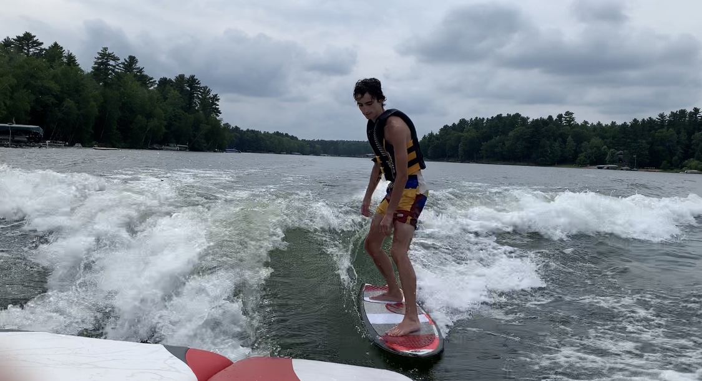

Bobby has been water skiing since he was 6 years old! While he started on 2 skis, he quickly learned how to slalom and eventually how to barefoot. Bobby has also become involved in all types of watersports. He enjoys tubing with friends and wake surfing. Water Sports are not the most well-known, so here's a list of Bobby's favorites with a brief explanation.
- Slalom Water Skiing
- Slaloming is by far Bobby's favorite thing to do behind the boat. Slalom is when the skier only skis with only one ski. Typically, the skier will quickly cut from one side of the wake to another. Nothing beats that feeling of gliding across the water.
- Wake Surfing
- Wake Surfing is when the rider surfs the wave that the boat produces. To achieve a ridable wave, the boat first fills ballast bags with water. Then the wake plate is adjusted to shape the wave. Finally, the driver needs to keep the speed between 10 and 12 mph to maintain the wave.

- Tubing
- Tubing is easily the best boating activity when with a group of friends. It's pretty self explanatory an individual rides a tube towed by the boat. Tubing is especially fun when the driver makes it their goal to make the riders fall off.